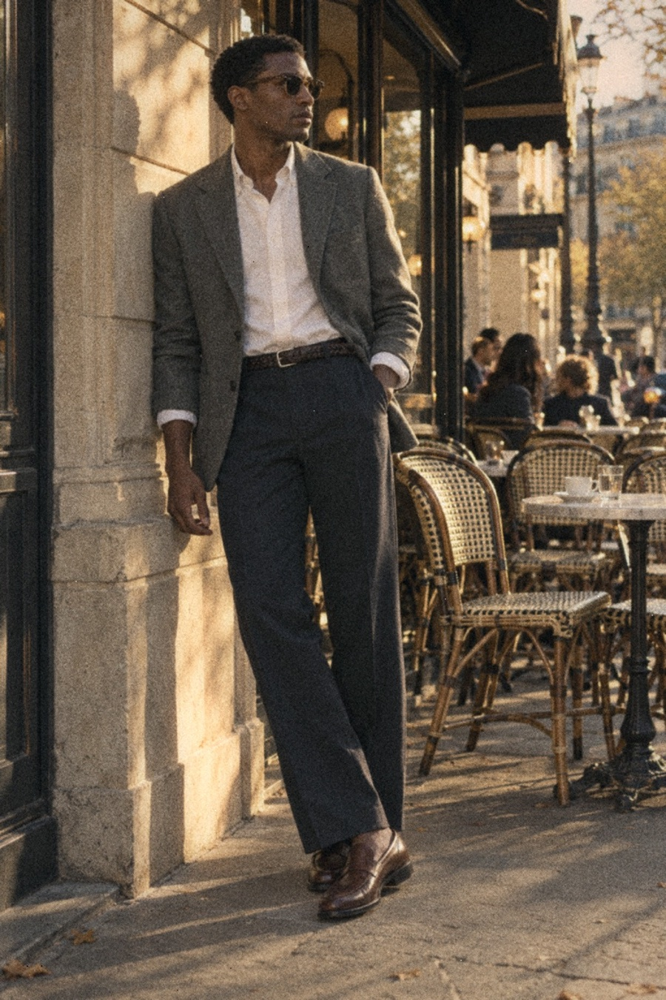
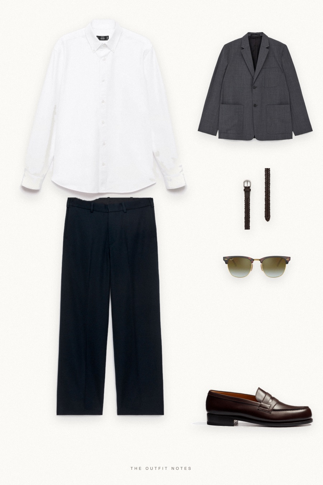

Terrace Grey
grey blazer, white oxford, brown mocassins


Smart casual men's style at the cafe: ARKET grey melange wool blazer over a Mango white Oxford shirt, ARKET navy loose fit wool trousers, a braided brown belt and J.M. Weston 180 moccasins. Ray-Ban Clubmaster sunglasses add polish. A sharp, wearable early fall outfit men can repeat all season.
The pieces
This page contains affiliate links: if you buy through them, we may earn a commission at no extra cost to you. Disclosure.
 ARKET
ARKET
Grey melange wool blazer
Shop Mango
Mango
White oxford shirt
Shop ARKET
ARKET
Navy loose wool trousers
Shop![J.M. Weston Mocassin 180 [homme cuir lisse marron mélèze]](../../img/products/jm-weston-180-moccasin-marron-meleze.jpg) J.M. Weston
J.M. Weston
Brown penny loafers
Shop ARKET
ARKET
Brown braided leather belt
Shop Ray-Ban
Ray-Ban
Havana clubmaster sunglasses
Shop
Prices are indicative, taken when the look was published, and may have changed. Pictures of the outfit are AI-generated illustrations of real products; the product photos are the retailers' own.
Published 1 October 2026.